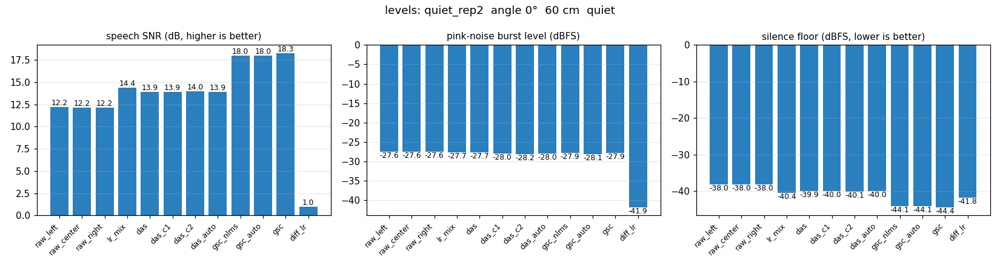
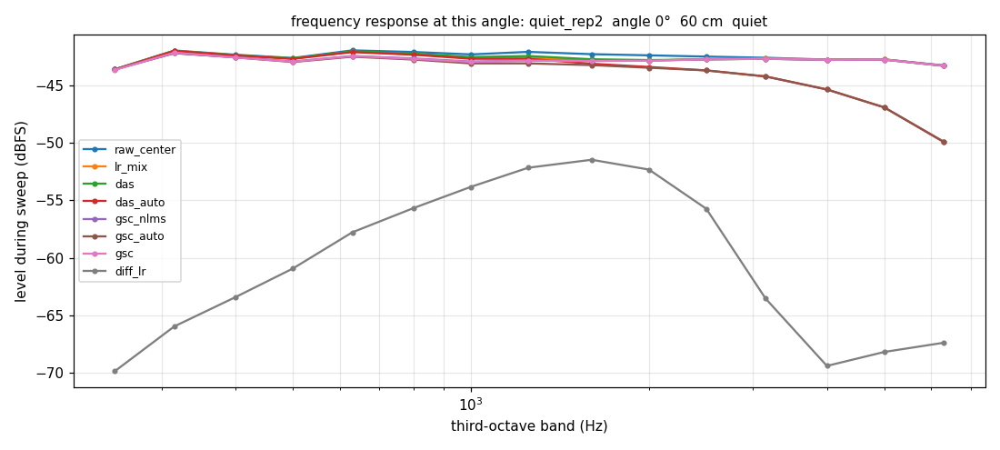
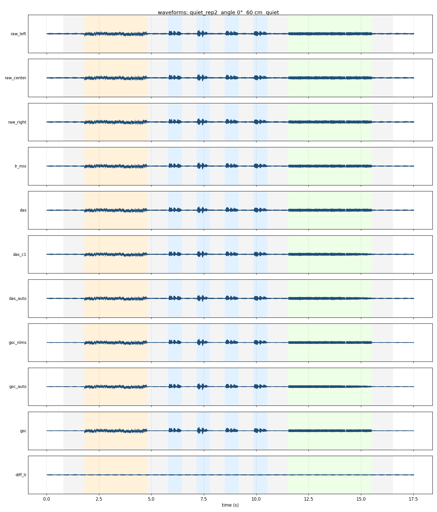
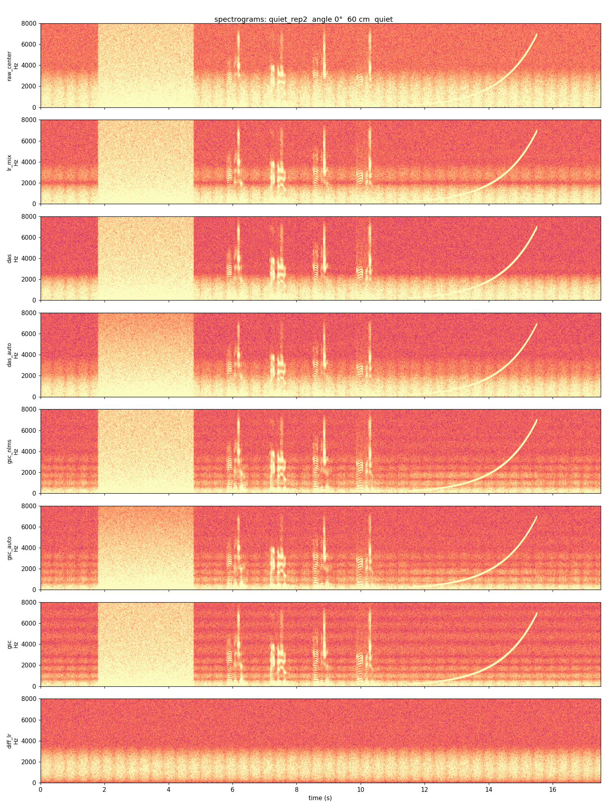

angle 0°, 60 cm, quiet, 17.53 s. Clip offset 0.8 s (confidence 0.929).
Microphones hear the source at +0° (L-R delay 0.0 samples, peak 9.4).
| path | rms_dbfs | speech_snr_db | noise_level_dbfs | silence_floor_dbfs | interf_rejection_db | interf_rejection_lf_db | snr_under_interference_db | speech_preservation | peak | clips |
|---|---|---|---|---|---|---|---|---|---|---|
| raw_left | -29.83 | 12.18 | -27.56 | -38.04 | 0.9794 | 6908 | 0 | |||
| raw_center | -29.83 | 12.17 | -27.57 | -38.04 | 0.9942 | 6670 | 0 | |||
| raw_right | -29.83 | 12.17 | -27.57 | -38.05 | 0.9795 | 6533 | 0 | |||
| lr_mix | -30.12 | 14.42 | -27.73 | -40.41 | 0.9985 | 6420 | 0 | |||
| das | -30.07 | 13.94 | -27.7 | -39.91 | 6501 | 0 | ||||
| das_c1 | -30.48 | 13.93 | -28.0 | -39.96 | 0.994 | 6243 | 0 | |||
| das_c2 | -30.83 | 13.97 | -28.16 | -40.13 | 0.9837 | 6047 | 0 | |||
| das_auto | -30.48 | 13.93 | -28.0 | -39.96 | 0.994 | 6243 | 0 | |||
| gsc_auto | -30.79 | 17.97 | -28.15 | -44.1 | 0.9769 | 6215 | 0 | |||
| diff_lr | -41.8 | 0.96 | -41.85 | -41.83 | 0.0029 | 1412 | 0 | |||
| gsc | -30.39 | 18.29 | -27.87 | -44.38 | 0.9798 | 6426 | 0 | |||
| gsc_nlms | -30.37 | 18.01 | -27.86 | -44.09 | 0.9828 | 6587 | 0 |



